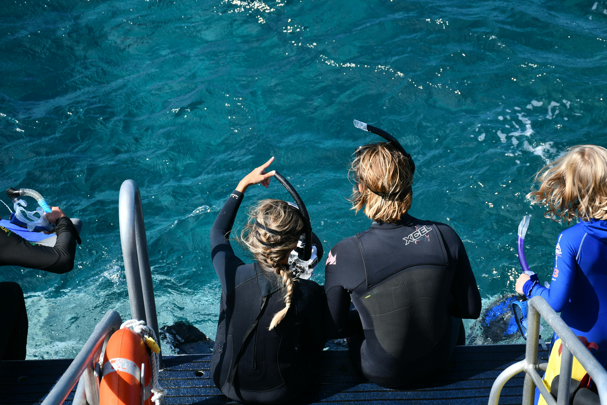

Problema a ser resolvido

Muitas vezes, crescer sem entender o valor dos oceanos e da vida marinha pode nos deixar despreparados para lidar com os desafios ambientais quando adultos. Isso pode levar a decisões que prejudicam o meio ambiente, simplesmente por falta de consciência.
Tecnologia que utilizaremos

Estamos envolvidos no mundo da inovação com a plataforma Arduino, criando um emocionante jogo de quiz. As perguntas são exibidas diretamente no Arduino, e os jogadores selecionam suas respostas por meio de botões, adicionando um toque de interatividade à experiência.
Ao final, o Arduino calcula a pontuação, proporcionando um desfecho emocionante para esta jornada educativa e divertida.
Nossos Objetivos
Nosso mergulho nesse projeto visa despertar a curiosidade e o engajamento das crianças no aprendizado sobre os oceanos e a vida marinha. Queremos envolvê-las emocionalmente, incentivando a exploração ativa e a descoberta enquanto promovemos a conscientização ambiental de maneira lúdica.
Público a ser impactado
Nosso jogo visa principalmente crianças em idade escolar, mas também engaja pais, educadores e a comunidade.
Buscamos criar uma onda de mudança que promova a conscientização ambiental além das salas de aula e lares.
Benefícios oferecidos pela solução

Nossa abordagem interativa e educativa promove aprendizado ativo e conscientização ambiental.
Além disso, desenvolve habilidades tecnológicas e de pensamento crítico, proporcionando diversão e inspirando ação pró-ambiental no dia a dia das crianças.
Como essa solução pode ajudar no dia a dia
Ao despertar a curiosidade e conscientização desde cedo, incentivamos hábitos mais sustentáveis e responsáveis. Isso se reflete em escolhas diárias, como reduzir o uso de plástico, economizar água e proteger a vida marinha, contribuindo para um futuro mais verde e promissor.